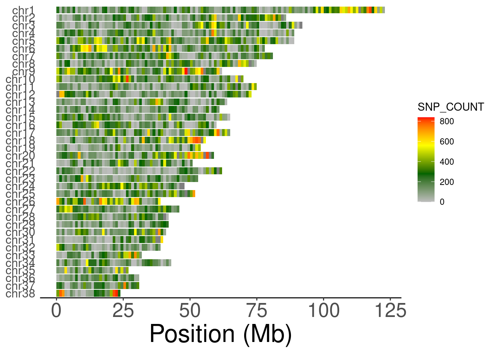

handyFunctions
The goal of handyFunctions is to get rid of the barrier to deal with non-standard data.frame format for R newbies, especially the user in bioinformatics data analysis. Besides, there are also some required plot functions for downstream analysis of dataset generated from vcftools and plink.
Installation
You can install the development version of handyFunctions like so:
## Clone it from github and install it locally
git clone https://github.com/LuffyLouis/handyFunctions.git
## OR
## Install it in R
remotes::install_github("LuffyLouis/handyFunctions")Example
handyFunctionspackage contain three main sections, including ReformatDataframe, InteractDataframe, and Post-VCF. There are some basic examples which show you how to solve common problems in data analysis:
ReformatDataframe
This section is designed to reformat data.frame with odd colnames, rownames, or even inappropriate dtypes for each columns.
unifyDataframe
Based on the following example unifyDataframe function, you can change the formats of raw data.frame to what you want. Especially for the dtypes in data.frame, you can set custom=FALSE for automatically changing into appropriate dtypes.
library('handyFunctions')
data("people")
head(people)
#> ..name ..sex ..age ..death..age
#> 1 Ming Li male 12 34
#> 2 Zixuan Liu female 23 thirty
#> 3 Yizhen Zhu male NA 54
#> 4 Lingling Wang female 21 77
#> 5 Bang Wei male 11 <NA>
#> 6 Xiaoyu Chen female 74 89
modifiedPeople <- unifyDataframe(people,rawColSep = '[.][.]')
head(modifiedPeople)
#> name sex age death_age
#> 1 Ming Li male 12 34
#> 2 Zixuan Liu female 23 thirty
#> 3 Yizhen Zhu male <NA> 54
#> 4 Lingling Wang female 21 77
#> 5 Bang Wei male 11 <NA>
#> 6 Xiaoyu Chen female 74 89Note: due to the separation supporting regEx, please use the "[.][.]" for reformatting people data.frame.
InteractDataframe
The InteractDataframe section is designed for interaction between two data.frame or one data.frame and another vector.
mergeCustom
Sometimes, we often find it fuzzy and tedious while we’d like to merge two data.frame with different colnames. Therefore, mergeCustom function may be the better solution to get it rid of.
library('handyFunctions')
data("people");data("grade")
head(people)
#> ..name ..sex ..age ..death..age
#> 1 Ming Li male 12 34
#> 2 Zixuan Liu female 23 thirty
#> 3 Yizhen Zhu male NA 54
#> 4 Lingling Wang female 21 77
#> 5 Bang Wei male 11 <NA>
#> 6 Xiaoyu Chen female 74 89
head(grade)
#> name chinese math english physics biology chemistry
#> 1 Ming Li 120 130 145 80 90 99
#> 2 Zixuan Liu 109 120 110 85 99 88
#> 3 Yizhen Zhu 98 113 100 74 100 76
#> 4 Lingling Wang 138 145 126 55 89 100
#> 5 Bang Wei 119 105 139 100 78 99
#> 6 Xiaoyu Chen 119 105 120 69 80 77
merged <- mergeCustom(people,grade,xcol = '..name',ycol = 'name')
head(merged)
#> ..name ..sex ..age ..death..age chinese math english physics biology
#> 1 Bang Wei male 11 <NA> 119 105 139 100 78
#> 2 Lingling Wang female 21 77 138 145 126 55 89
#> 3 Ming Li male 12 34 120 130 145 80 90
#> 4 Xiaoyu Chen female 74 89 119 105 120 69 80
#> 5 Yizhen Zhu male NA 54 98 113 100 74 100
#> 6 Zixuan Liu female 23 thirty 109 120 110 85 99
#> chemistry
#> 1 99
#> 2 100
#> 3 99
#> 4 77
#> 5 76
#> 6 88Post-VCF
plotSNVdensity
library('handyFunctions')
library('ggplot2')
data("SNV_1MB_density_data")
head(SNV_1MB_density_data)
#> CHROM BIN_START SNP_COUNT VARIANTS.KB
#> 1 1 0 253 0.253
#> 2 1 1000000 31 0.031
#> 3 1 2000000 208 0.208
#> 4 1 3000000 77 0.077
#> 5 1 4000000 204 0.204
#> 6 1 5000000 75 0.075
ShowSNPDensityPlot(SNV_1MB_density_data,binSize=1e6,chromSet = c(38:1),withchr=T)+
theme(axis.text.y = element_text(size=12))
#> ## Filtering the density data with specific chrom set...
#> ## Judging if it should be added the chr and factoring...
#> ## Reformatting the raw density data...